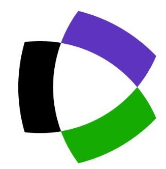

Research
Professional and research online profiles
| Inspire-HEP | Research Gate | |||
| ORCID | Google Scholar | |||
| Scopus | arXiv | |||
|  | Web of Science |
Current lines of research and interests
Index of projects
- Metric-affine gravity
- Instabilities in modified gravity
- Geometric foundations of gravity
- Other remarkable works
Metric-affine gravity
Parity-odd sector of MAGThe goal of this line is to understand the full curvature-square sector of metric-affine gravity, including parity-odd invariants.
Recent publications in this direction- J. Beltrán Jiménez, A. Jiménez-Cano, Y. Obukhov
On parity-odd sector in metric-affine theories,
Europ. Phys. J C 83, 115 (2023), arXiv: 2210.01729 [gr-qc]
Instabilities in modified gravity
Strongly coupled backgroundsThe aim of this line is to continue with the study of the implications of the so-called strong coupling problem in modified gravity. The problem can be detected by different methods and it is still unclear how these methods are related to each other (are they equivalent? or is some of them more general than the rest?). In some specific backgrounds in teleparallel gravity, this problem is expected to be solved for some solutions that, as a consequence of this, become physically viable spacetimes (at least from the point of view of this instability).
Recent publications in this direction- J. Beltrán Jiménez, A. Jiménez-Cano,
On the strong coupling of Einsteinian Cubic Gravity and its generalisations,
JCAP 01, 069 (2021), arXiv: 2009.08197 [gr-qc]
The aim of this line is to understand how restrictive are the stability conditions in metric-affine gravity. We have first focused on the case of propagating vectors, i.e. we assume a qMAG theory propagating at least one of the spin-1 contained in the vector irreducible parts of the torsion and the nonmetricity. We have recently shown that this is enough to restrict from 16 to 5 the number of parameters in the curvature square sector.
Recent publications in this direction (still to be accepted)- A. Jiménez-Cano, F. J. Maldonado Torralba
Vector stability in quadratic metric-affine theories,
JCAP 09, 044 (2022), arXiv: 2205.05674 [gr-qc]
Geometric foundations of gravity
This line covers all the aspects related to the modelling of gravity at a more fundamental level. The idea would be to explore new mathematical structures or approaches in order to address unanswared questions in the field.
Recent publications in this direction- J. Beltrán Jiménez, L. Heisenberg, D. Iosifidis, A. Jiménez-Cano, T. S. Koivisto,
General Teleparallel Quadratic Gravity,
Phys. Lett. B 805, 135422 (2020), arXiv: 1909.09045 [gr-qc]
- B. Janssen, A. Jiménez-Cano,
On the topological character of metric-affine Lovelock Lagrangians in critical dimensions,
Phys. Lett. B 798, 134996 (2019), arXiv: 1907.12100 [gr-qc]
Other remarkable works
- J. Arrechea, A. Delhom, A. Jiménez-Cano,
Inconsistencies in four-dimensional Einstein-Gauss-Bonnet gravity,
Chinese Phys. C 45, 013107 (2021), arXiv: 2004.12998 [gr-qc]
- J. Arrechea, A. Delhom, A. Jiménez-Cano,
Comment on 'Einstein-Gauss-Bonnet Gravity in four-dimensional space-time',
PRL 125, 149002 (2020), arXiv: 2009.10715 [gr-qc]